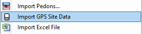
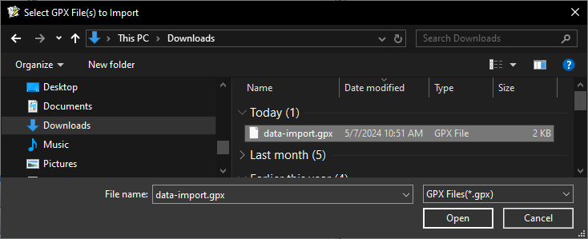
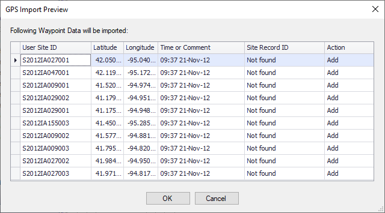
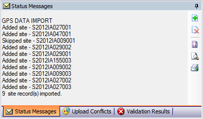

Exercise 6 – Importing Data
Download GPX File
In the NASIS Basic Microsoft Teams folder along with this exercise, locate and download the “data-import.gpx” file.
Import GPS Site Data
In NASIS, Click the NASIS menu and select “Import GPS Site Data”:

Next browse to the file you downloaded from Teams and click open. Files downloaded from Teams are typically stored in your downloads folder on your computer

The next window shows a preview of the data which will be uploaded:

Here you can check for completeness and correctness of the data, and you have the ability to alter the actions column, to either add the row of data or skip it. For User Site ID “S2012IA009001”, change the action to “skip” Notice you can also sort and filter the data to assist in reviewing. Click the OK button to continue.
Notice the status messages window has provided information on the import process confirming it has completed:

Open the “Site” table to view the newly added data.
Import the GPS Site Data Again
Follow the same procedures as before to upload the same .gpx file again. This time when you get to the preview window it should look different. Since you’ve already loaded this data into your selected set you now see the site record ids for the existing sites you previously added – except for the one site that was skipped. Also notice a third option is now available in addition to add and skip. You can also choose to update data if an existing site record id was found. In this case, the updated data would be no different than what is already imported, but you may find it useful if you’ve already entered some data prior to importing the .gpx file. Cancel the preview window and return to the site table. Take a screenshot of the new data in the table and save to submit. For this exercise, you should discard all changes, but when using it for your own data, remember even though you have imported the data, to complete the process the data must be uploaded to the national database and you will also need to check the data back in.
Screenshot
Submit your screenshot by placing it in your exercise submission folder to complete the exercise.
End of Exercise